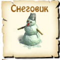

Получено: файл; исходный URL. Исходный файл без перекодирования; авторство не установлено. Страница: источник.
Снеговик
браузерная версия; платформа и дата редакции не установлены- Тип
- Постройка
- Версия и дата
- браузерная версия; платформа и дата редакции не установлены
Данные по источнику · браузерная версия; платформа не определена · дата редакции не установлена
Предварительно: Автоматическое чтение цифровых пиктограмм и их подписей; знак ? означает нераспознанное количество, подписи могут содержать ошибки источника. Требуется ручная сверка каждой стадии.. Требуется сверка.
- Исходные подписи и цифры в первой колонке
- [Снеговик] | [Доступен на 1-м уровне] | [Стоимость постройки] | 5000 | [Опыт за каждый этап строительства] | 50 | 50 | 50 | 50 | 100 | [Суммарный опыт] | 300 | Строить можно | только зимой
- Стадии по пиктограммам
- Стадия 1: 20 × Снежок + 1 × Цемент + 500 × монеты Стадия 2: 15 × Снежок + 3 × Цемент + 1000 × монеты Стадия 3: 5 × Снежок + 5 × Цемент + 3000 × монеты Стадия 4: 1 × Ведро + 1 × Урожай перца чили + 2 × Урожай бамбука
Данные по источнику · браузерная версия; платформа не установлена · дата редакции списка не установлена
Предварительно: Прочитан список. Имена файлов пиктограмм приводятся как есть: они не гарантируют идентификацию материала. Alt-атрибуты источника содержат ошибки. Отдельная статья и дата не проверены.. Требуется сверка.
- Сведения из списка, включая имена файлов пиктограмм
- [рисунок: Snegovik.png] Доступен на: 1 уровне Стоимость: 5000 монет Даёт опыта: 1650 (50+500+500+500+100) Стадии строительства: 1. 100 [рисунок: Snegok.png] + 10 [рисунок: Cement.png] + 5000 [рисунок: gold.jpg] 2. 050 [рисунок: Snegok.png] + 30 [рисунок: Cement.png] + 10000 [рисунок: gold.jpg] 3. 015 [рисунок: Snegok.png] + 50 [рисунок: Cement.png] + 30000 [рисунок: gold.jpg] 4. 001 [рисунок: vedro.png] + 01 [рисунок: Perec_Chili02.png] + 2 [рисунок: Bambuk02.png] Производит: 1 [рисунок: Super-kley.png] + 1 [рисунок: Transformator.png] =1 [рисунок: Geltaya_kraska.png] 3 [рисунок: Cement.png] + 15 [рисунок: Chernika_s_kostochkoy.png] =1 [рисунок: Sinyaya_cherepica.png]


Данные по источнику · браузерная игра; платформа страницы не уточнена · 11.01.2014 — публикация; редакция неизвестна
Предварительно: Прочитана конкретная строка; старые сведения, у источника встречаются опечатки. Возможны заимствования, независимость от других сайтов не доказана.. Требуется сверка.
- Стадии по Zommbie
- 1: 100 снежков + 10 цемента + 5000 монет; 2: 50 снежков + 30 цемента + 10 000 монет; 3: 15 снежков + 50 цемента + 30 000 монет.
- Возможности и рецепты по Zommbie
- Жёлтая краска = 1 супер-клей + 1 трансформатор; синяя черепица = 3 цемента + 15 черники с косточкой.
Данные по источнику · историческая браузерная игра, площадка не указана · 05.05.2012 — дата публикации; дата редакции неизвестна
Предварительно: Сопоставлено по единственному точному названию; различные версии или одноимённые объекты могут различаться. Названия файлов и alt пиктограмм сохранены как подписи, не заменяют проверенную расшифровку; изображения и цены требуют ручной сверки. Независимость от zombi-ferma.ru и других сайтов не установлена.. Требуется сверка.
- Текст и пиктограммы источника
- [изображение: m_snowman.png] Стадии строительства: 1. 100 [изображение: Snegok.png] + 10 [изображение: Cement.png] + 5000 [изображение: gold.jpg] 2. 050 [изображение: Snegok.png] + 30 [изображение: Cement.png] + 10000 [изображение: gold.jpg] 3. 015 [изображение: Snegok.png] + 50 [изображение: Cement.png] + 30000 [изображение: gold.jpg] 4. 001 [изображение: ведро, снеговик, построить; vedro.png] + 01 [изображение: Перец Чили; Perec_Chili02.png] + 2 [изображение: Бамбук; Bambuk02.png] Производит: 1 [изображение: Супер-клей; Super-kley.png] + 1 [изображение: Transformator.png] =1 [изображение: Жёлтая краска; Geltaya_kraska.png] 3 [изображение: Cement.png] + 15 [изображение: Черника с косточкой; Chernika_s_kostochkoy.png] =1 [изображение: Синяя черепица; Sinyaya_cherepica.png]
Связанные сущности
нет проверенных связей — требуется сверка.